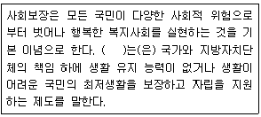
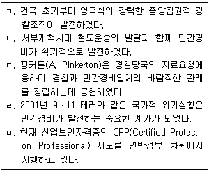
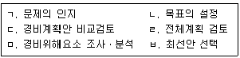
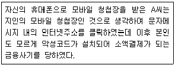
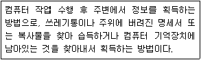
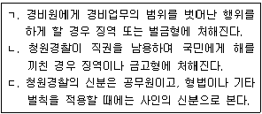

경비지도사-1차(법학개론,민간경비론) (2018-11-17 기출문제)
1과목: 법학개론
1. 법과 도덕에 관한 설명으로 옳지 않은 것은?
- 법은 행위의 외면성을, 도덕은 행위의 내면성을 다룬다.
- 법은 강제성을, 도덕은 비강제성을 갖는다.
- 법은 타율성을, 도덕은 자율성을 갖는다.
- 권리 및 의무의 측면에서 법은 일면적이나, 도덕은 양면적이다.
(정답률: 76%)

2. 관습법에 관한 설명으로 옳지 않은 것은?
- 관습법은 당사자의 주장ㆍ입증이 있어야만 법원이 이를 판단할 수 있다.
- 민법 제1조에서는 관습법의 보충적 효력을 인정하고 있다.
- 형법은 관습형법금지의 원칙이 적용된다.
- 헌법재판소 다수의견에 의하면 관습헌법도 성문헌법과 동등한 효력이 있다.
(정답률: 58%)
3. 법단계설을 주장한 학자는?
- 켈젠 (H. Kelsen)
- 슈미트 (C. Schmitt)
- 예링 (R. v. Jhering)
- 스멘트 (R. Smend)
(정답률: 65%)
4. 법의 분류에 관한 설명으로 옳지 않은 것은?
- 자연법은 시ㆍ공간을 초월하여 보편적으로 타당한 법을 의미한다.
- 임의법은 당사자의 의사에 의하여 그 적용이 배제될 수 있는 법을 말한다.
- 부동산등기법은 사법이며, 실체법이다.
- 오늘날 국가의 개입이 증대되면서 ‘사법의 공법화’ 경향이 생겼다.
(정답률: 60%)
5. 사실확정을 위한 실정법의 추정규정으로 옳지 않은 것은?
- 공유자의 지분은 균등한 것으로 추정한다.
- 아내가 혼인 중에 임신한 자녀는 남편의 자녀로 추정한다.
- 2인 이상이 동일한 위난으로 사망한 경우에는 동시에 사망한 것으로 추정한다.
- 실종선고를 받은 자는 실종기간이 만료한 때에 사망한 것으로 추정한다.
(정답률: 55%)
6. “형법 제329조 절도죄의 객체인 「재물」에 부동산은 포함되지 아니한다”고 해석한다면 이는 무슨 해석인가?
- 축소해석
- 유추해석
- 반대해석
- 확장해석
(정답률: 60%)
7. 권리와 관련된 설명으로 옳지 않은 것은?
- 사권(私權)은 권리의 작용에 의해 지배권, 청구권, 형성권, 항변권으로 구분된다.
- 사권은 권리의 이전성에 따라 절대권과 상대권으로 구분된다.
- 권능은 권리의 내용을 이루는 개개의 법률상의 힘을 말한다.
- 권한은 본인 또는 권리자를 위하여 일정한 법률효과를 발생케 하는 행위를 할 수 있는 법률상의 자격을 말한다.
(정답률: 38%)
8. 법의 효력에 관한 규정으로 옳지 않은 것은?
- 법률은 특별한 규정이 없는 한 공포한 날로부터 20일을 경과함으로써 효력을 발생한다.
- 모든 국민은 소급입법에 의하여 참정권의 제한을 받거나 재산권을 박탈당하지 않는다.
- 대통령은 내란 또는 외환의 죄를 범한 경우를 제외하고는 재직 중 형사상의 소추를 받지 아니한다.
- 범죄의 성립과 처벌은 재판시의 법률에 의한다.
(정답률: 56%)
9. 타인이 일정한 행위를 하는 것을 참고 받아들여야 할 의무는?
- 작위의무
- 수인의무
- 간접의무
- 권리반사
(정답률: 62%)
10. 현행 헌법상 정당설립과 활동의 자유에 관한 설명으로 옳지 않은 것은?
- 정당의 설립은 자유이며, 복수정당제는 보장된다.
- 정당은 그 목적, 조직과 활동이 민주적이어야 한다.
- 정당의 목적과 활동이 민주적 기본질서에 위배될 때에는 국회는 헌법재판소에 그 해산을 제소할 수 있다.
- 국가는 법류이 정하는 바에 의하여 정당의 운영에 필요한 자금을 보조 할 수 있다.
(정답률: 46%)
11. 우리 헌법재판소가 목적의 정당성, 방법의 적절성, 피해의 최소성, 법익의 균형성 등으로 기본권의 침해 여부를 심사하는 위헌판단원칙은?
- 과잉금지원칙
- 헌법유보원칙
- 의회유보원칙
- 포괄위임입법금지원칙
(정답률: 54%)
12. 현행 헌법에서 명문으로 규정하고 있는 기본권은?
- 생명권
- 인간다운 생활을 할 권리
- 주민투표권
- 흡연권
(정답률: 77%)
13. 국회와 행정부 간의 관계를 설명한 것으로 옳지 않은 것은?
- 국회는 국무총리 또는 국무위원의 해임을 대통령에게 건의할 수 있다.
- 대통령은 국회에 출석하여 발언하거나 서한으로 의견을 표시할 수 있다.
- 국회는 국정을 감사하거나 특정한 국정사안에 대하여 조사할 수 있다.
- 대통령은 국회에서 의결된 법률안의 일부에 대하여 재의를 요구할 수 있다.
(정답률: 36%)
14. 우리 헌법재판소의 관장사항이 아닌 것은?
- 법원의 제청에 의한 법률의 위헌여부 심판
- 지방자치단체 상호간의 권한쟁의심판
- 국회의원에 대한 탄핵심판
- 법률에 대한 헌법소원심판
(정답률: 60%)
15. 민법상 용익물권인 것은?
- 질권
- 지역권
- 유치권
- 저당권
(정답률: 41%)
16. 민법상 물건에 관한 설명으로 옳지 않은 것은?
- 건물 임대료는 천연과실이다.
- 관리할 수 있는 자연력은 동산이다.
- 건물은 토지로부터 독립한 부동산으로 다루어질 수 있다.
- 토지 및 그 정착물은 부동산이다.
(정답률: 48%)
17. 민법상 불법행위책임의 성립요건이 아닌 것은?
- 고의나 과실로 인한 가해행위일 것
- 가해행위가 위법성이 있을 것
- 가해자의 행위능력이 있을 것
- 가해행위로 인한 손해가 발생할 것
(정답률: 49%)
18. 법인이 아닌 사단의 사원이 집합체로서 물건을 소유할 때의 소유 형태는?
- 단독소유
- 공유
- 합유
- 총유
(정답률: 43%)
19. 경비회사 甲이 乙과 경비계약을 체결하기 위하여 제안서를 교부하였을 때, 다음 중 옳은 것은?
- 甲의 의사표시가 진의가 아님을 乙이 알았다면 甲의 의사표시는 무효이다.
- 甲의 의사표시가 乙의 사기로 인한 것이라면 甲의 의사표시는 무효이다.
- 甲의 의사표시가 乙의 강박으로 인한 것이라면 甲의 의사표시는 무효이다.
- 甲과 乙이 서로 통정한 허위의 의사표시라면 甲의 의사표시는 취소할 수 있다.
(정답률: 57%)
20. 고객 乙이 경비회사 甲을 상대로 손해배상을 원인으로 민사소송을 제기하였을 때, 다음 중 옳지 않은 것은?
- 乙은 강제집행을 보전하기 위하여 가압류 절차를 밟을 수 있다.
- 이 소송목적의 값이 5,000만 원 이하라면 소액사건심판법의 절차에 의한다.
- 항소는 판결서가 송달된 날부터 2주 이내에 하여야 하나, 판결서 송달 전에도 할 수 있다.
- 乙이 미성년자라도 독립하여 법률행위를 할 수 있는 경우에는 소송을 제기할 수 있다.
(정답률: 42%)
21. 경비회사 甲의 경비원 A는 임산부 B를 경호하다가 A의 과실로 B의 태아 C가 사산되었다면, 다음 중 옳지 않은 것은? (단, 甲은 A의 선임 및 사무 감독에 상당한 주의를 다하지 않았음)
- B는 甲에게 손해배상청구를 할 수 있다.
- B는 A에게 손해배상청구를 할 수 있다.
- C는 甲에게 손해배상청구를 할 수 없다.
- C는 A에게 손해배상청구를 할 수 있다.
(정답률: 54%)
22. 형법상 개인적 법익에 대한 죄가 아닌 것은?
- 절도죄
- 폭행죄
- 도박죄
- 공갈죄
(정답률: 71%)
23. 형법상 위법성조각사유에 관한 설명으로 옳지 않은 것은?
- 자구행위는 사후적 긴급행위이다.
- 정당방위에 대해 정당방위를 할 수 있다.
- 긴급피난에 대해 긴급피난을 할 수 있다.
- 정당행위는 위법성이 조각된다.
(정답률: 52%)
24. 형사소송에서 피고인에 관한 설명으로 옳지 않은 것은?
- 피고인은 진술거부권을 가진다.
- 피고인은 당사자로서 검사와 대등한 지위를 가진다.
- 검사에 의하여 공소가 제기된 자는 피고인이다.
- 피고인은 소환, 구속, 압수, 수색 등의 강제처분의 주체가 된다.
(정답률: 52%)
25. 형사소송법상 체포에 관한 설명으로 옳지 않은 것은?
- 검사 또는 사법경찰관리 아닌 자가 현행범인을 체포한 때에는 48시간 이내에 수사기관에 인도해야 한다.
- 현행범인은 누구든지 영장 없이 체포할 수 있다.
- 검사 또는 사법경찰관은 피의자 체포시 피의사실의 요지, 체포의 이유와 변호인을 선임할 수 있음을 말하고 변명할 기회를 주어야 한다.
- 검사가 체포한 피의자를 구속하고자 할 때에는 체포한 때부터 48시간 이내에 구속영장을 청구하여야 한다.
(정답률: 60%)
26. 형사소송에서 법관이 불공평한 재판을 할 염려가 있는 경우에 자발적으로 직무집행에서 탈퇴하는 것은?
- 기피
- 회피
- 제척
- 거부
(정답률: 59%)
27. 우리나라 형사소송법의 기본구조가 아닌 것은?
- 기소독점주의
- 공개재판주의
- 증거재판주의
- 형식적 진실주의
(정답률: 57%)
28. 형사소송에서 상소에 관한 설명으로 옳지 않은 것은?
- 검사 또는 피고인은 상소를 할 수 있다.
- 항소의 제기기간은 7일로 한다.
- 항소권자는 항소를 제기하려면 항소기간 내에 항소장을 항소법원에 제출하여야 한다.
- 판결에 대한 상소에는 항소와 상고가 있다.
(정답률: 41%)
29. 합명회사에 관한 설명으로 옳은 것은?
- 무한책임사원과 유한책임사원으로 조직한다.
- 2인 이상의 무한책임사원으로 조직한다.
- 사원이 출자금액을 한도로 유한의 책임을 진다.
- 사원은 주식의 인수가액을 한도로 하는 출자의무를 부담할 뿐이다.
(정답률: 54%)
30. 상법상 주식회사 설립시 정관의 절대적 기재사항이 아닌 것은?
- 목적
- 상호
- 청산인
- 본점의 소재지
(정답률: 57%)
31. 보험계약에 관한 설명으로 옳지 않은 것은?
- 사행계약(射倖契約)이 아니다.
- 유상(有償)ㆍ쌍무(雙務)계약이다.
- 불요식(不要式)의 낙성계약(諾成契約)이다.
- 계약관계자에게 선의 또는 신의성실이 요구되는 선의계약이다.
(정답률: 47%)
32. 상법상 손해보험이 아닌 것은?
- 화재보험
- 운송보험
- 해상보험
- 생명보험
(정답률: 71%)
33. 근로기준법상 근로계약에 관한 설명으로 옳은 것은?
- 미성년자의 임금청구는 친권자가 대리하여야 한다.
- 사용자는 긴박한 경영상의 필요가 있으면 근로자를 해고할 수 있다.
- 사용자는 근로계약 불이행에 대한 위약금 예정 계약을 체결할 수 있다.
- 근로자에 대한 해고는 반드시 서면으로 할 필요는 없다.
(정답률: 59%)
34. 근로자의 업무상 재해보상과 재해근로자의 재활 및 사회 복귀를 촉진하고 이에 필요한 보험시설을 설치ㆍ운여하며 재해 예방과 그 밖에 근로자의 복지 증진을 위한 법률은?
- 근로복지기본법
- 근로자퇴직급여 보장법
- 산업재해보상보험법
- 임금채권보장법
(정답률: 56%)
35. 사회보장기본법에 관한 설명으로 옳지 않은 것은?(오류 신고가 접수된 문제입니다. 반드시 정답과 해설을 확인하시기 바랍니다.)
- 모든 국민은 사회보장 관계 법령에서 정하는 바에 따라 사회보장급여를 받을 권리를 가진다.
- 사회보장에 관한 주요 시책을 심의ㆍ조정하기 위하여 국무총리 소속으로 사회보장위원회를 둔다.
- 국가와 지방자치단체는 모든 국민의 인간다운 생활을 유지ㆍ증진하는 책임을 가진다.
- 사회보장수급권은 포기할 수 있으나, 그 포기는 취소할 수 없다.
(정답률: 56%)
36. ( )에 들어갈 내용은?

- 사회보험
- 공공부조
- 사회서비스
- 팽생사회안전망
(정답률: 50%)
37. 지방자치단체의 조직에 관한 설명으로 옳지 않은 것은?
- 지방자치단체에 주민의 대의기관인 의회를 둔다.
- 지방자치단체의 장은 주민이 보통ㆍ평등ㆍ직접ㆍ비밀선거에 따라 선출한다.
- 지방자치단체의 장은 법령의 범위 안에서 자치에 관한 조례를 제정할 수 있다.
- 지방자치단체의 종류는 법률로 정한다.
(정답률: 42%)
38. 행정청이 건물의 철거 등 대체적 작위의무의 이행과 관련하여 의무자가 행할 작위를 스스로 행하거나 또는 제3자로 하여금 이를 행하게 하고 그 비용을 의무자로부터 징수하는 행정상의 강제집행 수단은?
- 행정대집행
- 행정벌
- 직접강제
- 행정상 즉시강제
(정답률: 53%)
39. 행정행위에 취소사유가 있다고 하더라도 당연무효가 아닌 한 권한 있는 기관에 의해 취소되기 전에는 유효한 것으로 통용되는 것은 행정행위의 어떠한 효력 때문인가?
- 강제력
- 공정력
- 불가변력
- 형식적 확정력
(정답률: 35%)
40. 행정법상 행정작용에 관한 설명으로 옳지 않은 것은?
- 기속행위는 행정주체에 대하여 재량의 여지를 주지 않고 그 법규를 집행하도록 하는 행정행위를 말한다.
- 특정인에게 새로운 권리나 포괄적 법률관계를 설정해주는 특허는 형성적 행정행위이다.
- 의사표시 이외의 정신작용 등의 표시를 요소로 하는 행위는 준법률행위적 행정행위이다.
- 개인에게 일정한 작위의무를 부과하는 하명은 형성적 행정행위이다.
(정답률: 20%)
2과목: 민간경비론
41. 민간경비와 공경비의 공통적 임무가 아닌 것은?
- 질서유지
- 범죄수사
- 범죄예방
- 재산보호
(정답률: 90%)
42. 경제환원론에 관한 설명으로 옳지 않은 것은?
- 민간경비가 성장함에 따라 민간경비 기업들은 하나의 이익집단을 형성한다고 본다.
- 민간경비시장의 성장을 범죄의 증가에 따른 직접적인 대응이라는 전제 하에서 출발한다.
- 거시적 차원에서 범죄의 증가를 실업의 증가에서 그 원인을 찾으려고 한다.
- 민간경비시장의 성장을 경제전반의 상태와 운용에 연결시켜서 설명한다.
(정답률: 64%)
43. 경찰이 범죄예방이나 통제와 같은 서비스를 제공할 수 있는 능력이 감소됨으로써 발생한 ‘사각지대’를 민간경비가 보완해 준다는 것과 관련된 이론은?
- 비용공동부담이론
- 공동화이론
- 민영화이론
- 지역사회활동이론
(정답률: 77%)
44. 민간경비의 개념에 관한 설명으로 옳은 것은?
- 형식적 개념은 공경비와 민간경비가 명확히 구별된다.
- 광의의 개념은 국민의 생명과 재산을 보호하기 위하여 일정한 비용을 지불한 특정고객에게 안전관련 서비스를 제공하는 개인만을 의미한다.
- 협의의 개념은 주체면에서 민간과 국가를 포함한다.
- 실질적 개념은 실정법인 경비업법에서 규정하는 허가를 받고 경비업무를 수행하는 활동을 말한다.
(정답률: 58%)
45. 민간경비에 관한 설명으로 옳은 것은?
- 영리성을 갖는다.
- 불특정다수의 시민이 수혜대상이다.
- 사전예방과 법집행을 한다.
- 공권력을 추구한다.
(정답률: 74%)
46. 최근 범죄의 변화 양상에 관한 설명으로 옳지 않은 것은?
- 무선인터넷과 스마트폰 등의 보급 확대로 인하여 사이버범죄가 증가하고 있다.
- 노령인구가 증가하면서 노인범죄가 사회문제로 대두되고 있다.
- 청소년범죄가 흉포화되고 있다.
- 범죄행위 및 방법이 지역화, 기동화, 조직화, 집단화되고 있다.
(정답률: 66%)
47. 자본주의 사회에서 공경비가 갖는 근본적인 성격과 역할 및 기능에 관한 통념적 인식에 의문을 제기하면서 출발하고 있는 이론은?
- 공동생산이론
- 공동화이론
- 비용공동부담이론
- 수익자부담이론
(정답률: 43%)
48. 경찰 범죄예방능력의 한계에 관한 설명으로 옳지 않은 것은?
- 경찰인력이 부족하다.
- 타 부처와의 업무협조가 과중하다.
- 경찰장비가 부족하고 노후하다.
- 의사결정구조가 수평적이다.
(정답률: 73%)
49. 민간경비의 국내ㆍ외 치안환경변화에 관한 설명으로 옳지 않은 것은?
- 양극화된 이념체제가 붕괴되면서 다극화된 경제실리체제로 변모하였다.
- 국제화, 개방화로 인하여 국제범죄조직과 국제테러조직의 국내잠입 및 활동이 우려되고 있다.
- 지역별, 권역별 경제공동체인 EU, 북미자유경제권 등이 붕괴되었다.
- 외국인노동자, 다문화가정 등으로 인하여 새로운 치안수요가 발생하고 있다.
(정답률: 64%)
50. 우리나라 민간경비원이 합법적으로 수행할 수 있는 업무는?
- 현행범체포
- 긴급체포
- 압수ㆍ수색
- 감청
(정답률: 78%)
51. 주체에 따른 경비업무의 유형 중 성격이 다른 하나는?
- 상주경비
- 무인기계경비
- 신변보호경비
- 순찰경비
(정답률: 70%)
52. 우리나라의 민간경비 관련 제도에 관한 설명으로 옳지 않은 것은?
- 1962년 청원경찰법과 1976년 용역경비업법이 제정되면서 민간경비의 법적ㆍ제도적 기틀이 마련되었다.
- 우리나라의 청원경찰제도는 외국에서 흔히 볼 수 없는 제도이다.
- 민간조사제도는 경비업법상 규정되어 있지 않다.
- 경비지도사의 직무는 경찰관직무집행법에 구체적으로 규정되어 있다.
(정답률: 63%)
53. 미국 민간경비의 발전에 관한 설명으로 옳은 것을 모두 고른 것은?

- ㄱ, ㄴ, ㄷ
- ㄱ, ㄹ, ㅁ
- ㄴ, ㄷ, ㄹ
- ㄷ, ㄹ, ㅁ
(정답률: 74%)
54. 우리나라 민간경비산업의 발전 및 특징에 관한 설명으로 옳지 않은 것은?
- 1986년 아시안게임, 1988년 올림픽, 1993년 엑스포 등 국제행사를 치르면서 크게 발전하였다.
- 기계경비가 활성화되고 있으나 아직까지는 인력경비에 대한 의존도가 높다.
- 계약경비보다는 상대적으로 비용이 저렴한 자체경비가 발전하고 있다.
- 2001년 경비업법 개정으로 특수경비원제도가 도입되어 청원경찰의 입지가 축소되었다.
(정답률: 82%)
55. 경비업법령상 일반경비원의 신임교육 과목에 해당되지 않는 것은?
- 범죄예방론
- 사격
- 체포ㆍ호신술
- 직업윤리 및 서비스
(정답률: 85%)
56. 각국 민간경비원의 법적 지위에 관한 설명으로 옳지 않은 것은?
- 미국에서 민간경비원의 불법행위는 일반인의 불법행위와 동일한 민사책임을 지지 않는다.
- 미국에서 민간경비원의 심문 또는 질문에 일반시민이 응답해야 할 의무는 없다.
- 일본에서 형사법상 정당방위나 긴급피난에 의해 이루어진 민간경비원의 행위는 위법성이 조각된다.
- 우리나라에서 국가중요시설에 근무하는 특수경비원은 필요한 경우 무기 휴대가 가능하지만 수사권은 인정되지 않는다.
(정답률: 73%)
57. 미국과 일본의 민간경비산업 현황에 관한 설명으로 옳은 것은?
- 미국에서 경찰과 민간경비는 상명하복 관계에 있다.
- 홀크레스트(Hallcrest) 보고서에 의하면 2000년대 이후 미국의 민간경비인력은 경찰인력의 절반 수준으로 성장하고 있다.
- 일본에서 민간경비원의 교통유도경비는 경찰관의 교통정리와 같은 법적 강제력이 없다.
- 일본의 민간경비는 2000년대 이후부터 한국과 중국에 진출을 시도하면서 인력경비가 급속히 성장하고 있다.
(정답률: 64%)
58. 민간경비조적의 운영관리에 관한 설명으로 옳지 않은 것은?
- 명령통일의 원리: 직속상관에게 지시를 받고 보고함으로써 책임소재를 명확히 해야 한다.
- 계층제의 원리: 권한과 책임에 따라 직무를 등급화함으로써 상하 간 지휘ㆍ감독 관계를 수립하여야 한다.
- 조정ㆍ통합의 원리: 조직의 목표 달성을 위해 업무의 조화를 추구한다는 원리로서 전문화ㆍ분업화된 조직일수록 그 필요성이 감소한다.
- 통솔범위의 원리: 통솔범위는 한 사람의 관리자가 효과적으로 관리할 수 있는 최대한의 직원 수를 말하는 것으로서 계층의 수가 적을수록 통솔범위가 넓다.
(정답률: 58%)
59. 경비관리 책임자의 조사상 역할로 옳은 것은?
- 기획 및 조직화
- 예산과 재정 상의 감독
- 사무행정
- 감시, 회계, 회사규칙의 위반 확인
(정답률: 59%)
60. 경비업법령상 특수경비원의 교육에 관한 설명으로 옳지 않은 것은?
- 특수경비업자는 특수경비원 신임교육을 받지 아니한 자를 특수경비업무에 종사하게 해서는 안 된다.
- 특수경비원으로 채용되기 전 3년 이내에 특수경비업무에 종사했던 경력이 있는 사람은 신임교육 대상에서 제외될 수 있다.
- 특수경비업자는 소속 특수경비원에 대하여 매월 6시간 이상의 직무교육을 실시해야 한다.
- 특수경비원의 교육 시 특수경비업자의 요청이 있을 경우 관할경찰서 소속 경찰공무원이 교육기관에 입회하여 지도ㆍ감독할 수 있다.
(정답률: 61%)
61. 경비시설물의 물리적 통제시스템에 관한 설명으로 옳지 않은 것은?
- 최근에는 첨단과학기술을 이용한 감지시스템이 개발되어 적용되고 있다.
- 경비시설물 내에 존재하는 내부자산에 대한 경비보호계획은 별도로 수립하지 않아도 된다.
- 비상 시에만 사용하는 외부 출입구에는 경보장치를 설치하여야 한다.
- 시설물에 대한 물리적 통제는 기본적으로 경계지역, 건물외부지역, 건물내부지역이라는 세 가지 방어선으로 구분된다.
(정답률: 81%)
62. 경비업법령상 경비지도사에 관한 내용으로 옳지 않은 것은?
- 경비지도사의 기본 교육시간은 44시간이다.
- 기계경비지도사는 오경보방지 등을 위하여 기기관리의 감독을 한다.
- 경호현장에 배치된 경호원에 대한 순회점검 및 감독을 월 1회 이상 실시한다.
- 경비지도사는 경비원 직무교육 실시대장에 그 내용을 기록하여 1년간 보존하여야 한다.
(정답률: 64%)
63. 일정한 패턴이 전혀 없는 외부 및 내부의 침입을 발견, 억제, 사정, 무력화할 수 있도록 계획된 시스템을 갖춘 경비수준은?
- 최고수준경비(Level V)
- 상위수준경비(Level IV)
- 중간수준경비(Level III)
- 하위수준경비(Level II)
(정답률: 60%)
64. 경비위해분석에 관한 설명으로 옳지 않은 것은?
- 경비활동의 대상이 되는 위험요소들을 파악하는 경비진단 활동이다.
- 위험요소의 척도화는 대상물이 갖고 있는 인지된 사실들의 환경을 고려하여 무작위로 배열하는 것이다.
- 비용효과분석은 투입비용 대비 산출효과를 비교하여 적정한 경비수준을 결정하는 과정이다.
- 위험요소분석에 있어서 가장 선행되어야 하는 것은 위험요소를 인지하는 것이다.
(정답률: 74%)
65. 국가중요시설에 관한 설명으로 옳지 않은 것은?
- “가”급 시설에는 청와대, 국회의사당, 정부중앙청사, 국방부 등이 있다.
- “나”급 시설에는 대검찰청, 경찰청, 한국은행 본점 등이 있다.
- “다”급 시설에는 중앙행정기관의 청사, 한국은행 각 지역본부 등이 있다.
- 기타급 시설에는 중앙부처장 또는 시ㆍ도지사가 필요하다고 지정한 행정 및 산업시설 등이 있다.
(정답률: 50%)
66. 경찰법상 국가경찰의 임무가 아닌 것은?
- 범죄의 예방ㆍ진압 및 수사
- 치안정보의 수집 및 서비스 제공
- 외국정부기관 및 국제기구와의 국제협력
- 교통단속과 교통위해방지
(정답률: 44%)
67. 외곽경비에 관한 설명으로 옳지 않은 것은?
- 외곽경비는 자연적 장애물과 인공적 구조물 등을 이용하여 시설을 보호한다.
- 모든 출입구의 수를 파악하고 공기흡입관, 배기관 등은 경비계획에 포함시켜야 한다.
- 안전유리의 설치목적은 침입자의 침입시도를 완벽하게 저지하는 것이다.
- 차량출입구는 평상시에는 양방향을 유지하지만 특별하게 차량통제에 대한 필요성에 맞추어 일방으로 통행을 제한할 수 있다.
(정답률: 64%)
68. 출입통제방법에 관한 설명으로 옳지 않은 것은?
- 차량은 출입목적에 따라 출입증을 발급하고 주차지역을 지정하여야 하며 반출입 물품에 대해서도 면밀히 조사하여야 한다.
- 직원 출입구는 외부 방문객과 구분하여 하나의 문만 사용하도록 하고 통행하는 직원의 적절한 통제를 위해 출입구의 폭이 최대한 넓어야 한다.
- 출입증이 없는 차량의 경우에는 그 용도와 목적을 확인하고 내부에서도 이 차량이 주차할 수 있는 지역을 한정하여야 한다.
- 방문객이 통고 없이 방문하는 경우에는 대기실에서 대기하도록 하거나 대기실 외의 이동 시 반드시 방문객임을 표시하는 징표를 부착하여 CCTV 등을 통한 감시와 통제가 이루어져야 한다.
(정답률: 85%)
69. 재해예방과 비상계획 수립과정으로 옳은 것은?

- ㄱ→ㄴ→ㄷ→ㄹ→ㅁ→ㅂ
- ㄱ→ㄴ→ㄹ→ㅁ→ㄷ→ㅂ
- ㄱ→ㄴ→ㅁ→ㄹ→ㄷ→ㅂ
- ㄱ→ㄷ→ㅁ→ㄹ→ㄴ→ㅂ
(정답률: 69%)
70. 내부절도의 경비에 관한 설명으로 옳지 않은 것은?
- 주기적 순찰과 감시경비원 및 CCTV의 확충으로 경비인력의 혼합운영이 필요하다.
- 감사부서와의 협조 하에 정기적으로 회계감사를 실시한다.
- 직원의 채용 시 학력, 경력, 전과, 이념 등 신원조사를 실시한다.
- 사내의 현금보관 금고는 내부인의 접근에도 유의하여야 한다.
(정답률: 53%)
71. 다음 사례에 해당하는 신종금융범죄는?

- 스미싱(Smishing)
- 메모리 해킹(Memory Hacking)
- 파밍(Pharming)
- 피싱(Phishing)
(정답률: 64%)
72. 컴퓨터 범죄의 예방대책 중 관리적 대책이 아닌 것은?
- 프로그램 개발 통제
- 스케줄러 점검
- 컴퓨터 프로그램 보호법 제정
- 감사증거기록 삭제 방지
(정답률: 33%)
73. 컴퓨터 범죄의 특성이 아닌 것은?
- 범행의 단절성
- 광범위성과 자동성
- 발견ㆍ증명의 곤란성
- 고의입증의 곤란성
(정답률: 56%)
74. 다음 설명에 해당하는 컴퓨터 범죄의 유형은?

- 살라미 기법(Salami Techniques)
- 스캐빈징(Scavenging)
- 트랩도어(Trap Door)
- 슈퍼재핑(Super Zapping)
(정답률: 67%)
75. 국제경제협력개발기구(OECD)에서 제시한 2002년 정보시스템 및 네트워크보호와 관련된 기본원칙이 아닌 것은?
- 책임성의 원칙
- 윤리성의 원칙
- 다중협력성의 원칙
- 개방성의 원칙
(정답률: 47%)
76. 민간경비산업에서 청원경찰과 민간경비제도의 이원화에 관한 문제점이 아닌 것은?
- 지휘체계의 문제
- 보수 문제
- 특수경비원 배치 기피
- 신분보장 문제
(정답률: 58%)
77. 우리나라의 경찰과 민간경비 간의 관계 개선방안이 아닌 것은?
- 경찰조직 내 일정규모 이상의 민간경비 전담부서 설치
- 경찰과 민간경비원의 개별순찰제도 활성화
- 민간경비업체와 경찰 책임자의 정기적인 회의 개최
- 민간경비와 경찰 간 관련 정보의 적극적 교환
(정답률: 55%)
78. 우리나라 민간경비산업의 전망에 관한 설명으로 옳은 것은?
- 시설경비업: 국가중요시설의 경비를 담당하는 경비원 제도로 청원경찰과의 이원적 체제로 인한 문제점이 상존하고 있어 관련 정비가 시급한 설정이다.
- 특수경비업: 우리나라 경비업의 가장 큰 비중을 차지하는 분야로 향후 이러한 증가추세는 계속될 전망이다.
- 기계경비업: 기존의 상업시설과 홈시큐리티시스템 등의 첨단기술 발전에 힘입어 주거시설 및 국가안보분야에서의 수요도 혁신적으로 증가될 전망이다.
- 호송경비업: 외국 기업인과 가족들의 장기 체류 등으로 수요가 증가하고 있으며, 최근 사회불안이 가중되고 개인의 삶의 질이 높아짐에 따라 이러한 증가추세는 계속될 전망이다.
(정답률: 61%)
79. 우리나라 민간경비산업의 일반적 문제점으로 옳지 않은 것은?
- 경비업체들이 활동할 수 있는 경비업종이 다른 국가에 비해 다양하게 되어 있다.
- 경비원의 채용 및 교육훈련이 형식적이고 자격을 검증할 수 있는 객관적인 시스템이 부족하여 전문성이 낮은 수준이다.
- 대다수의 경비업체들은 영세하여 도급을 받지 못해 폐업하거나, 다른 경비업체로부터 하도급을 받고 있는 상황이다.
- 경비업체는 정규직원보다 임시계약직이나 시간제 근로자로 채용하고, 경비원들은 조금 더 조건이 좋은 경비업체로 쉽게 이직을 하고 있다.
(정답률: 62%)
80. 우리나라 청원경찰과 민간경비원의 민ㆍ형사상 책임에 관한 설명으로 옳은 것을 모두 고른 것은?

- ㄱ
- ㄱ, ㄴ
- ㄱ, ㄷ
- ㄴ, ㄷ
(정답률: 61%)